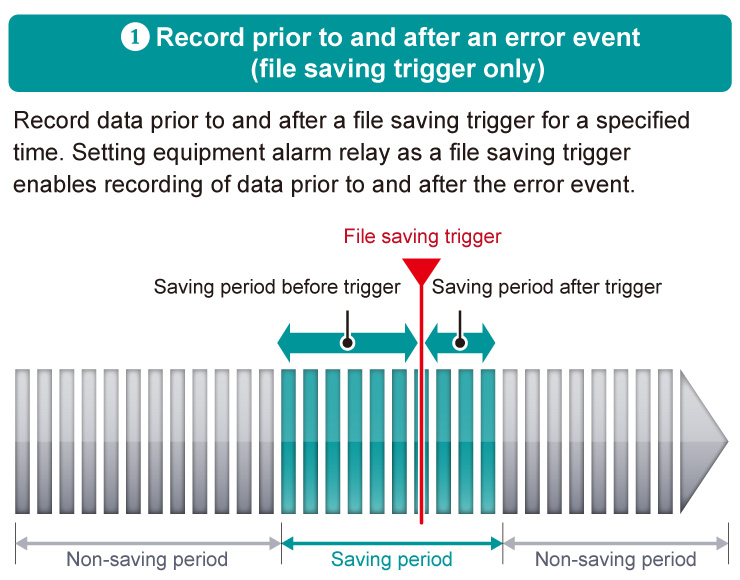
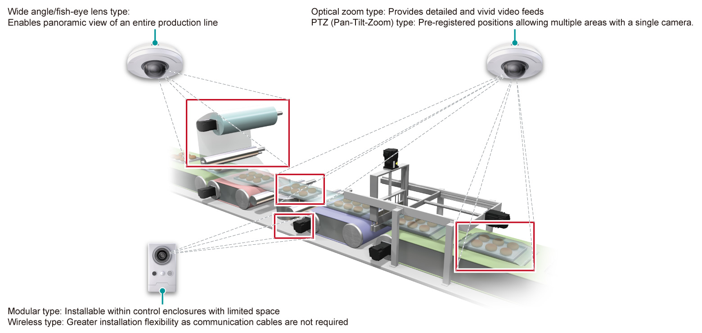
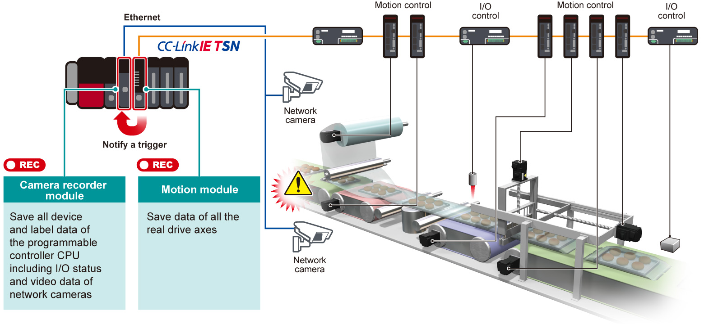

Controllers MELSEC iQ-R Series Fitur Produk -System Recorder-

Perekaman seluruh sistem


Perekaman di seluruh sistem - Kontrol Data
Pengumpulan perangkat/label setiap pemindaian (pengendali yang dapat diprogram)
- ❶Pengumpulan semua data perangkat dan label
- MELSEC Modul perekam Seri iQ-R dan modul perekam kamera dapat secara otomatis mengumpulkan semua data perangkat dan label per pemindaian pengontrol yang dapat diprogram sebelum dan setelah kejadian kesalahan (bersama dengan stempel waktu)
- Pengumpulan data lengkap yang diperlukan untuk analisis memastikan analisis kesalahan yang lebih sederhana, mengurangi waktu pemulihan sistem kontrol
- Pengumpulan perangkat keselamatan dan label juga didukung
- ❷Pengaturan mudah
- Modul perekam dan modul perekam kamera dapat diatur dalam perangkat lunak rekayasa intuitif GX Works3
- Perangkat target dan label yang akan direkam secara otomatis ditetapkan dengan mencentang kotak
- Pengaruh pada waktu pemindaian CPU dapat diperiksa
- ❸Dampak minimal pada waktu pemindaian
- Modul dirancang untuk memisahkan beban dari modul CPU, meminimalkan dampak pada kontrol
- Pengaruh pada waktu pemindaian CPU lebih diminimalkan dengan penyaringan perangkat dan label
- Target pengumpulan dapat ditetapkan dengan cepat dengan mempersempitnya dengan kondisi penyaringan
Metode perekaman menurut aplikasi
Perekaman data sebelum dan sesudah kejadian kesalahan
- Dua pengaturan periode penyimpanan tersedia dengan modul perekam/modul perekam kamera MELSEC iQ-R Series. Selain merekam data sebelum dan sesudah kejadian, data dapat direkam mulai dari awal siklus peralatan

- Total periode penyimpanan sebelum dan sesudah pemicu dapat diatur dalam rentang 1 hingga 86400 detik
- Jika kapasitas buffer perekaman terlampaui, data lama akan ditimpa

- Jika pemicu permulaan perekaman dan semacamnya ditetapkan, data disimpan tanpa pemicu penyimpanan berkas
- Buffer perekaman sebelumnya ditimpa per pemicu permulaan perekaman
- Jika data melebihi kapasitas buffer perekaman dalam satu perekaman, data lama diprioritaskan dan data yang melebihi kapasitas dibuang
Pengaturan pemicu perekaman yang luas
- Modul perekam/modul perekam kamera tersedia dengan pemicu yang luas untuk perekaman yang dapat digunakan sesuai kebutuhan
- Pengaturan pemicu memungkinkan deteksi henti non-alarm dan deteksi gerakan, kesalahan yang sebelumnya tidak terdeteksi kini dapat dideteksi

- Sinyal aktif dipantau secara berkala untuk mendeteksi sinyal yang tetap tidak berubah selama periode tertentu sebagai batas waktu
- Digunakan untuk mendeteksi mesin yang berhenti tanpa alarm

- Pantau peralatan dan operator dengan kamera jaringan untuk memicu saat gerakan terdeteksi
- Deteksi gerakan hanya didukung oleh modul perekam kamera.
- Untuk detail kamera yang kompatibel, silakan lihat buletin teknis. (FA-A-0326)
Penyimpanan otomatis ke server file
- Sebagai penyimpanan file rekaman, kartu memori SD untuk modul perekam sistem atau server file (seperti NAS atau komputer) dapat dipilih
- Server file (seperti NAS atau komputer) dapat digunakan sebagai penyimpanan untuk data berkapasitas besar. Pengambilan data yang dikumpulkan secara jarak jauh langsung dari server file didukung tanpa memerlukan akses di lantai pabrik

Merekam umpan video saat terjadi kesalahan dengan kamera jaringan
- Dengan mendukung kamera jaringan yang tersedia, modul perekam kamera menawarkan berbagai pilihan fungsi, khusus untuk lingkungan aplikasi dan instalasi
- Kamera jaringan (seperti resolusi gambar, kecepatan bingkai) dapat diatur dalam GX Works3 tanpa memerlukan pengaturan individual

| Lingkungan instalasi | Kamera yang berlaku |
|---|---|
|
Tipe lensa sudut lebar/mata ikan |
|
Tipe zoom optik Tipe PTZ (Pan-Tilt-Zoom) |
|
Tipe modular Tipe nirkabel |
Perekaman di seluruh sistem - Data Video
Pemfokusan yang dioptimalkan pada subjek kamera
- Streaming gambar langsung dari kamera jaringan pada GOT (HMI) dan MELIPC MI3000 dan juga kontrol PTZ (Pan-Tilt-Zoom) dimungkinkan
- Pergerakan mesin dapat diperiksa dari GOT (HMI) dan MELIPC MI3000
- Penyesuaian yang halus didukung saat memantau umpan video langsung di lantai pabrik

Mendukung perekaman resolusi tinggi dan durasi panjang
- Perekam sistem menyimpan umpan video definisi tinggi untuk waktu yang lama menggunakan codec H.264 yang mengompresi data, sehingga penggunaan ruang menjadi lebih efisien
- Karena menggunakan format video serbaguna, tidak perlu memindahkan atau memproses lokasi penyimpanan berkas video. Selain itu, umpan video yang direkam dapat langsung diperiksa oleh perangkat lunak pemutaran ulang video umum serta GX VideoViewer dan GX VideoViewer Pro khusus
Mengumpulkan semua data sumbu servo secara real-time
- ❶Perekaman data posisi dari servo
- Sistem servo cenderung beroperasi pada waktu siklus yang jauh lebih cepat dibandingkan dengan pengontrol yang dapat diprogram sehingga sulit ditangkap. Data kontrol modul CPU gerak dan modul gerak dapat direkam dengan stempel waktu
- Data posisi terperinci dari servo dapat direkam
- ❷Pengumpulan otomatis tanpa memerlukan program
- Pengaturan parameter sederhana memungkinkan pengumpulan data tanpa pemrograman
- Data kecepatan/torsi/posisi penguat servo Seri MELSERVO-J5/MELSERVO-J4 yang terhubung dengan penguat gerak Seri MELSEC iQ-R modul/modul CPU gerakan secara otomatis dikumpulkan sebagai data pencatatan saat terjadi kesalahan
- Data dengan cap waktu disimpan dalam kartu memori SD modul gerakan/modul CPU gerakan

Fungsi perekaman bersama memungkinkan identifikasi penyebab kesalahan yang lebih mudah dengan merekam seluruh data sistem dalam modul*1BARU
- Ketika salah satu modul yang kompatibel*1 mendeteksi kesalahan, semua data yang direkam dalam sistem disimpan pada saat yang sama
- Dengan membandingkan data kontrol untuk setiap modul dan umpan video ketika terjadi kesalahan, penyebab kesalahan dalam beberapa perangkat dapat dengan mudah dianalisis
Contoh mesin pengemasan

Identifikasi penyebab kesalahan melalui jaringan di seluruh sistem dengan merekam bersama modul yang kompatibel*1BARU
- Kesalahan yang terdeteksi oleh salah satu modul yang kompatibel*1 diberitahukan ke stasiun lain melalui CC-Link IE TSN
- Bahkan dalam lini produksi skala besar dengan beberapa peralatan/proses, faktor kesalahan di seluruh pengontrol yang dapat diprogram dapat dengan mudah dianalisis dengan menyelaraskan kronologi

- *1.Modul perekam, modul perekam kamera, modul CPU gerak, dan modul gerak didukung.
Perekaman di seluruh sistem - Riwayat kejadian
Rekam riwayat kejadian
- Operasi dari perangkat lunak rekayasa dan operasi perangkat/label dari perangkat eksternal dapat direkam sebagai kejadian historis
- Dengan menganalisis riwayat kejadian dengan catatan perubahan perangkat/label saat terjadi kesalahan, kesalahan akibat penulisan data dari perangkat eksternal atau kesalahan prosedur operator dapat diperiksa

| Item yang direkam |
|---|
| Operasi dari perangkat lunak rekayasa |
| Pendaftaran data perangkat dan label melalui SLMP*2 Ethernet protokol |
| Pendaftaran data perangkat dan label menggunakan instruksi (dari stasiun atau mesin lain) |
| Pendaftaran perangkat dan label menggunakan “Komunikasi CPU Sederhana” (dari perangkat eksternal) |
- *2.SLMP: Seamless Message Protocol
Merekam log operasi dan riwayat alarm
- ❶Lebih mudah mengidentifikasi kesalahan penyebab dari log operasi
- Log operasi dapat direkam sebagai log operasi dalam kartu memori SD atau memori USB dan dapat dikonfirmasi dalam GOT (HMI) atau MELIPC MI3000 di lantai pabrik
- Data seperti log operasi dan riwayat alarm dapat diperiksa di komputer dalam rangkaian waktu
- Selain autentikasi operator, perekaman log operator tertentu dapat diidentifikasi dengan mudah
- ❷Perekaman riwayat alarm sistem
Kesalahan sistem yang terjadi dicatat di GOT (HMI) yang terletak di lantai pabrik. Alarm yang terkait dengan setiap perangkat dengan log terperinci yang menunjukkan nomor stasiun jaringan tertentu didukung. Fitur-fitur ini ideal untuk sistem berskala besar.